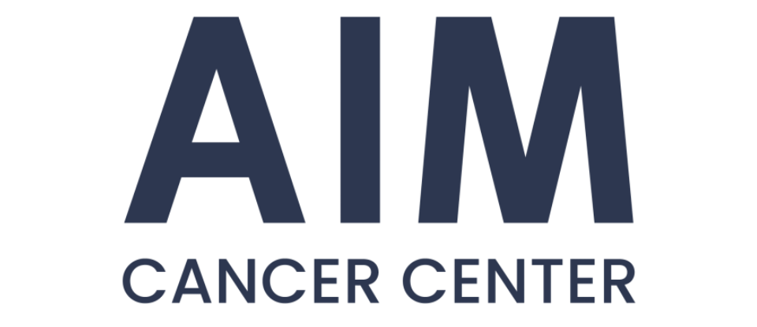
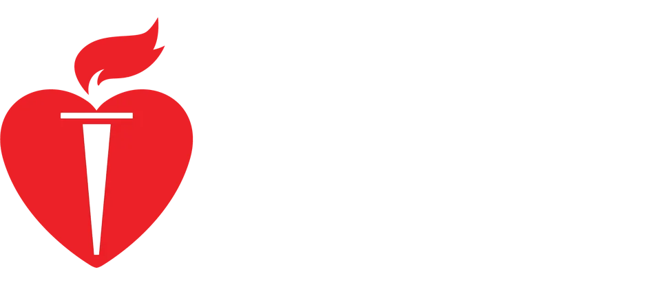
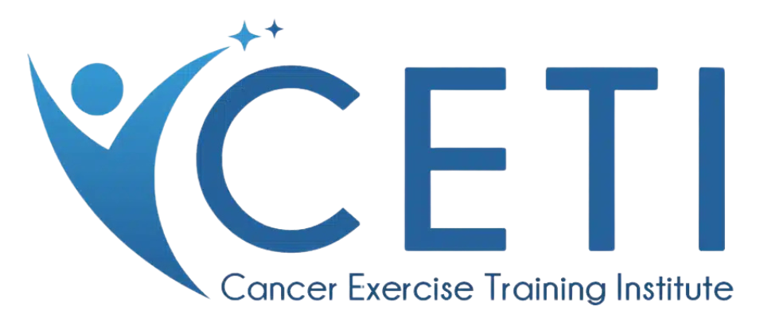
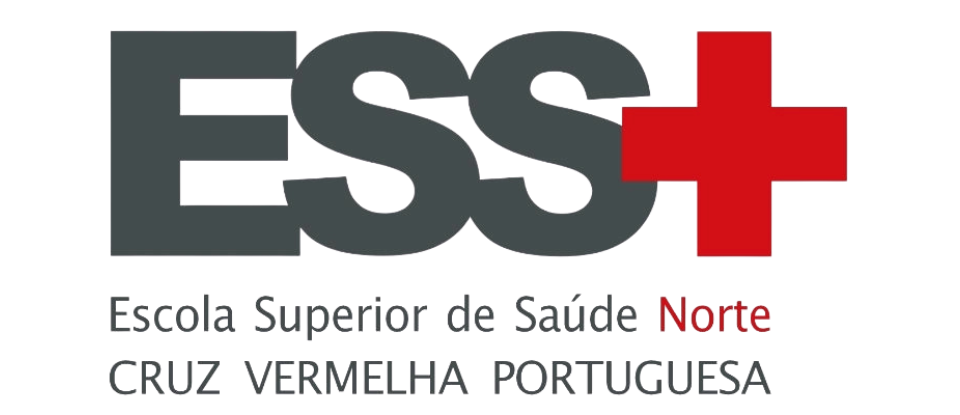
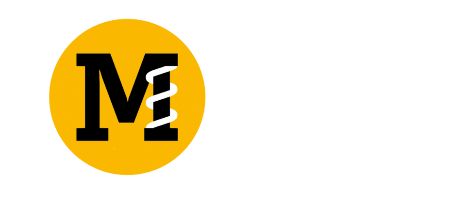
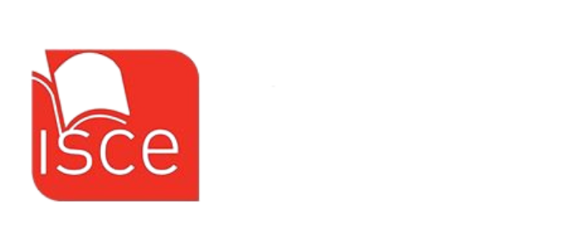
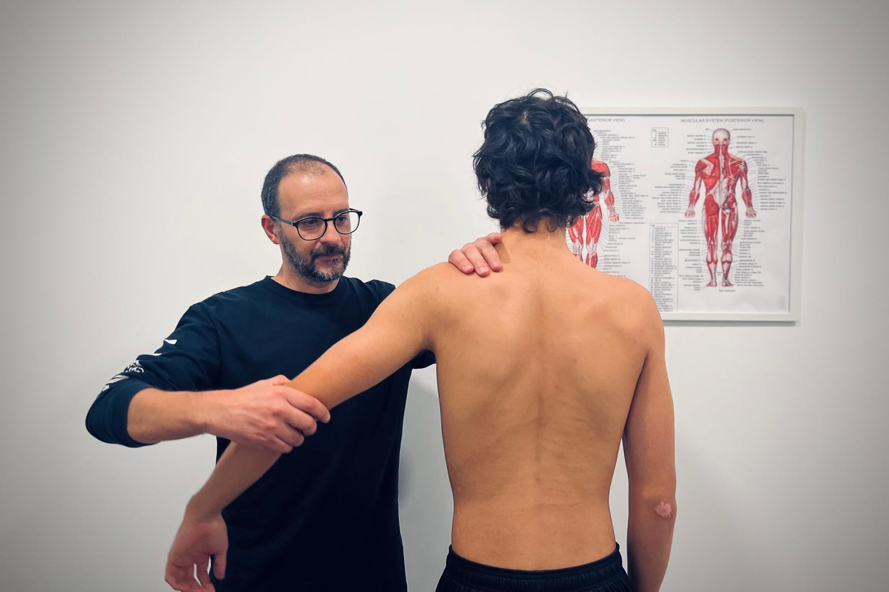
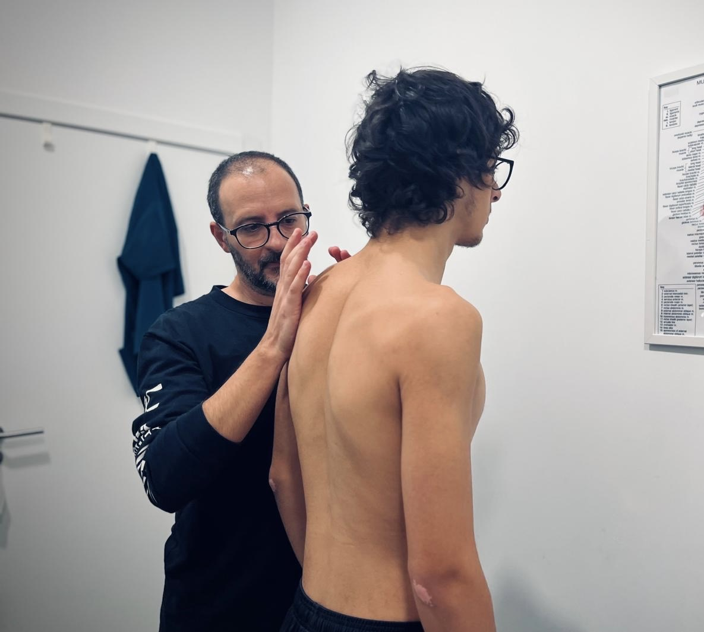

Osteopatia em Lisboa
Sessões presenciais de osteopatia em Lisboa com Paulo Morais. A avaliação individual orienta o acompanhamento das queixas e da mobilidade.
Entidades Certificadoras e Parceiros Institucionais








Porquê escolher o Paulo Morais?
Especialista qualificado
O Paulo é um profissional altamente e rigorosamente qualificado, mantendo uma formação clínica segura, eficaz e baseada nas melhores práticas.
Abordagem personalizada ao paciente
Cada paciente é avaliado de forma individual, permitindo a definição de planos de tratamento ajustados às suas necessidades específicas.
Excelência e qualidade nos cuidados de saúde
O Paulo compromete-se com elevados padrões de qualidade, proporcionando resultados clínicos eficazes e centrados no bem-estar do paciente.
Ambiente profissional, ético e acolhedor
Trabalha num espaço confortável e seguro, criando um ambiente ideal para recuperação e bem-estar de cada paciente.
+ 15 anos de
experiência
+ 100 pacientes
acompanhados
+ 250 tratamentos
personalizados
Os clientes falam pelo Paulo
O Paulo é especialista em Osteopatia, possuindo um sólido conjunto de competências clínicas que lhe permite exercer a prática osteopática, promovendo a integração e a prestação de serviços de saúde de excelência.

ANA RIBEIRO
PACIENTE DESDE 2021
Depois de quase um ano a tentar resolver as minhas dores nas costas sem grandes melhorias, encontrei o Paulo... e em poucos meses conseguiu resultados que nunca tinha alcançado antes. Nunca me senti tão confiante no meu corpo e na minha recuperação! Hoje em dia já nem imagino o meu quotidiano sem as sessões de osteopatia. A minha qualidade de vida melhorou imenso desde que comecei o acompanhamento, deixei de ter dores constantes na coluna (escoliose), sinto-me mais equilibrada, mais resistente e com muito mais mobilidade.
CLÁUDIA FERREIRA
PACIENTE DESDE 2022
Faço acompanhamento com o Paulo há menos de um ano, mas parece que já nos conhecemos há muito mais tempo. Para além de ser extremamente exigente e rigoroso no tratamento, dedica tempo a conhecer-nos, a ouvir-nos e a assumir como seus os nossos desafios físicos e emocionais. Quero agradecer-lhe por me ter ajudado a manter o equilibrio físico e mental durante um período de recuperação muito exigente, e por me explicar sempre com clareza como a osteopatia podia apoiar o meu corpo nesse processo.
SOFIA MATOS
PACIENTE DESDE 2021
O Paulo começou por ser apenas o profissional que me ajudava a aliviar dores físicas e hoje é alguém essencial no meu bem-estar, terapeuta manual e um verdadeiro apoio nos momentos mais difíceis. Não conheço muitos profissionais tão completos. Pode não ter resposta imediata para tudo, mas encontra sempre uma solução. Com o seu acompanhamento, consegui transformar o meu corpo e a minha condição fisica, num processo exigente mas profundamente recompensador.
INÊS & RUI
PACIENTES DESDE 2022
É impossível resumir toda a mais-valia que representa o acompanhamento feito pelo Paulo. No Paulo encontramos um nível de excelência e de cuidado que me ajudou a libertar de dores persistentes provocadas por uma escoliose complicada, aquela presença física que parecia não me largar. As sessões são sempre variadas, exigentes, bem-dispostas e, acima de tudo, eficazes, e os resultados estão à vista.
MARTA LOPES
CLIENTE DESDE 2018
Ao fim de 1 ano de PT e sem ver resultados, apareceu o Paulo... e em 9 meses conseguiu que atingisse resultados que nunca tinha atingido antes. Nunca estive tão motivada para ficar mais forte, mais segura e melhor! De facto, já nem imagino o meu dia-a-dia sem os treinos do Paulo e a minha qualidade de vida melhorou substancialmente desde que comecei os treinos.
VANESSA BORGES
CLIENTE DESDE 2017
Treino com o Paulo há menos de 1 ano, mas parece que
treino com ele há uma eternidade. Porque para além de exigir sempre mais de cada
um de nós, também dedica tempo durante o treino a conhecer-nos, a "gostar" de
nós e a tomar como seus os nossos desafios.
Obrigada Paulo por me ter mantido sã de cabeça e espírito durante o meu percurso
de quimioterapia e radioterapia. E por todos os artigos em que explicava que o
HIT era óptimo para quem estava neste percurso.
ANA FREIRE
CLIENTE DESDE 2016
O Paulo começou por ser um PT do ginásio e hoje é o meu
psicólogo desportivo, fisio/massagista/osteo e o que for preciso. Não conheço PT
mais completo. Não sabe tudo, mas arranja solução para tudo. Com ele passei de
uma calça 32/34 a uma 40/42, foi duro, mas valeu a pena.
Durante a minha lesão prévia à quarentena, o Paulo esteve presente todos os dias
em que quis desistir, levou com a minha frustração e fez tudo para não desistir
da luta pelo que mais gosto.
ANA CASACA
CLIENTE DESDE 2019
Finalmente encontrei o treino que procurava: personalizado com foco na pessoa! Personalizado, focado nos meus objectivos e com "bora lá, acaba lá isso" quando refilo. O Paulo foca-se todos os dias em fazer com que eu me supere.
INÊS MARTINS
CLIENTE DESDE 2010
Conhecemo-nos há mais de 20 anos e só depois de bastante
tempo parada, uma cirurgia à zona lombar e muitas calcificações nos ombros, é
que decidi treinar contigo. E arrependo-me ... arrependo-me por só ter começado
há pouco mais de 1 e meio. A tua paciência em motivar, adaptar os treinos
conforme a condição física e a tua exigência fazem de ti um profissional de
excelência.
Hoje sinto-me mais forte, com mais resistência e mais flexibilidade graças a
ti.
ANA TOMATAS
CLIENTE DESDE 2016
Comecei a treinar muito a medo, porque nunca fui muito
desportista. Fez-me descobrir uma vontade de treinar que não conhecia e o meu
corpo modificou-se ao longo do tempo. Abraçou-me quando achei que não conseguia
mais, acreditou quando nem eu acreditava e levou-me a um limite que eu não sabia
que existia. Os nossos caminhos separaram-se comigo a abraçar um desafio
internacional.
Mais do que perder peso, treinar com o Paulo é terapêutico, é conhecer-me melhor
e gostar mais de mim.
MARIA DO CÉU
CLIENTE DESDE 2018
No último ano aconteceu tudo. O pior e o mejor. Perdi a
minha boa forma. Engordei quase 10kg, comecei a comer de tudo, como
compensação. Mas decidi que no podia continuar a destruir-me, que tinha que
fazer alguma coisa por mim. Quase a fazer 50 anos e com muita vida que espero
viver com muita intensidade. Então conheci o Paulo e comecei a treinar com ele.
Em casa. No jardim do Campo Grande. No Estádio Universitário. E agora por
WhatsApp.
O Paulo não desistiu de mim, mesmo quando eu própria desisti.
CÁTIA SILVA
CLIENTE DESDE 2018
Começámos a treinar juntos, porque depois de descobrir
que estava grávida, e apesar de ter um bom ritmo de treino, sabia que era um
caminho que não conseguia fazer sozinha. O meu último treino foi 5 dias antes do
baby nascer. Não podia ter sido mais desafiante, mas foi sem dúvida cheio de
conquistas. Hoje, mais de 1 ano depois, conseguimos consolidar objectivos,
eliminar a pança pós-parto e atingir a minha melhor forma física de
sempre.
Não há um treino igual, não há um único treino fácil, não há um único dia em que
não te rogue mil pragas ... mas os resultados estão à vista!
ANA & HUGO
CLIENTES DESDE 2017
O Paulo tem uma excelência e cuidado que me tem libertado das dores de uma escoliose péssima. Os treinos são diferentes, desafiantes e engraçados. Frias faz parte da família e continuas com o nível de sempre!
O corpo lembra-se do cancro.
Fala sobre isso.
Fadiga, formigueiros, dor, sono, memória… Muitos efeitos do tratamento do cancro só aparecem, ou só se notam, meses ou anos depois. E muitos sobreviventes não os referem na consulta: acham que é normal, ou não querem voltar a sentir-se «doentes». Falar é o primeiro passo.
Escolhe um ponto no corpoCada ponto é um efeito tardio do tratamento do cancro que muitos sobreviventes sentem e que raramente chega à consulta. Toca para ver o que podes sentir e a pergunta a levar à tua equipa.
Memória e concentração
O «nevoeiro mental»: esquecer palavras, perder o fio ao que estavas a dizer, ter dificuldade em concentrar-te.
Pergunta à tua equipa«Estas falhas de memória podem estar relacionadas com o tratamento?»
Sono
Adormecer com dificuldade, acordar a meio da noite ou levantar-te sem ter descansado é muito frequente depois do tratamento.
Pergunta à tua equipa«Posso fazer alguma coisa para dormir melhor? Pode estar ligado ao tratamento ou à ansiedade?»
Dor que não passa
Dor que continua depois da cirurgia ou do tratamento, no ombro, na cicatriz, nas articulações ou nos músculos. A dor crónica também merece avaliação.
Pergunta à tua equipa«De onde vem esta dor e que opções tenho para a aliviar?»
Falta de ar e coração
Cansaço a subir escadas, falta de ar ou palpitações que antes não tinhas devem ser sempre mencionados à equipa de saúde.
Pergunta à tua equipa«Devo fazer algum exame ao coração ou aos pulmões?»
Se for súbito ou intenso (dor no peito, falta de ar forte), liga 112.
Fadiga e resistência física
Um cansaço que o descanso não resolve, ou perder a resistência que tinhas, pode durar anos depois do tratamento. Não é «preguiça» nem «exagero».
Pergunta à tua equipa«Esta fadiga é esperada no meu caso? O que posso fazer para a reduzir?»
Mãos e pés: sensibilidade
Formigueiro, dormência ou ardor nas mãos e nos pés (polineuropatia), dificuldade em abotoar a roupa ou em sentir bem o chão.
Pergunta à tua equipa«Isto pode ser efeito do tratamento? Preciso de ser avaliado?»
Informação geral; não substitui a tua equipa de oncologia. O Paulo não trata o cancro nem os seus efeitos: ajuda a adaptar o exercício e as sessões ao teu caso e a levar as tuas perguntas à consulta.
Reconheces algum destes sinais?
Falar com o PauloOsteopatia e treino
com Paulo Morais
A osteopatia é um dos serviços de Paulo Morais, a par do treino personalizado, do treino em grupo e do exercício depois do cancro. A escolha do acompanhamento depende das necessidades e dos objetivos de cada pessoa.
As sessões de osteopatia realizam-se presencialmente em Lisboa. Para exercício à distância, o treino online está disponível em Portugal, na União Europeia e em países lusófonos, de língua inglesa e de língua espanhola.
Osteopata em Lisboa
O que saber antes da primeira sessão de osteopatia com Paulo Morais.
Onde são as sessões de osteopatia?
As sessões de osteopatia com Paulo Morais realizam-se presencialmente em Lisboa. O local e o horário são combinados no contacto.
Como funciona o acompanhamento de osteopatia?
Cada acompanhamento começa com uma avaliação individual das queixas, da mobilidade e da postura. A abordagem é manual e integrativa, orientada para a mobilidade, a postura, o alívio da dor e o bem-estar.
Existe osteopatia online?
Não. A osteopatia é um serviço manual e presencial, em Lisboa. Para quem vive fora de Lisboa ou de Portugal, Paulo Morais disponibiliza treino online.
Posso combinar osteopatia com treino?
Sim. Paulo Morais é osteopata e personal trainer, por isso a osteopatia pode ser combinada com treino personalizado, treino em grupo ou treino oncológico, conforme as necessidades e os objetivos de cada pessoa.
A osteopatia substitui o médico?
Não. A osteopatia não substitui o diagnóstico nem o acompanhamento médico. Perante sintomas novos, persistentes ou urgentes, deve ser consultado um médico.
Em que línguas decorrem as sessões e como marcar?
As sessões decorrem em português e inglês. Para marcar, usa o formulário desta página, o WhatsApp ou o telefone (+351 960 471 537) ou o email (pt@pmorais.pt). Preços e disponibilidade são confirmados no contacto.
Entre em contacto connosco
